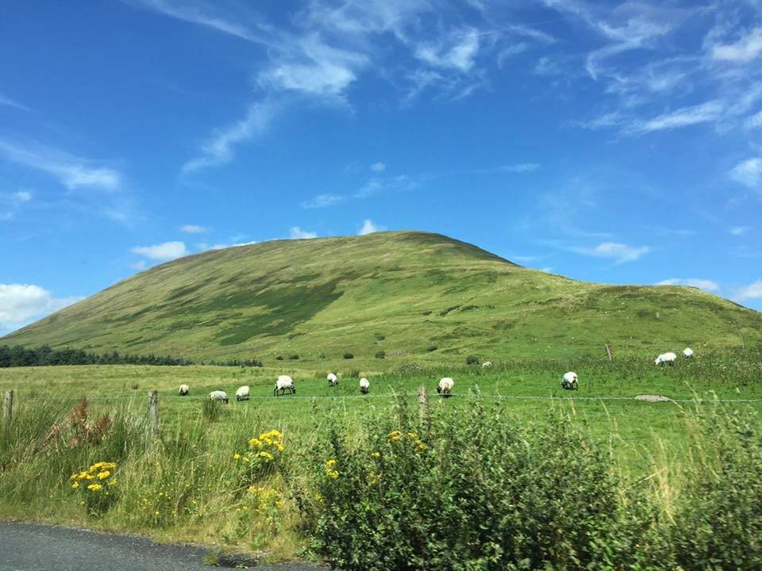

To summarize and conclude, this incredibly moving ballad may have been written about a fictional family and talk about events that did not occur. Yet, it should be noted that it in unquestionably influenced by the harrowing events of the Great Irish Famine. Furthermore, it is wholly believable that this story did occur in some way or form, when people were at their most desperate and in need of food during that famine-time horror that existed in Ireland during these terribly dark years.
